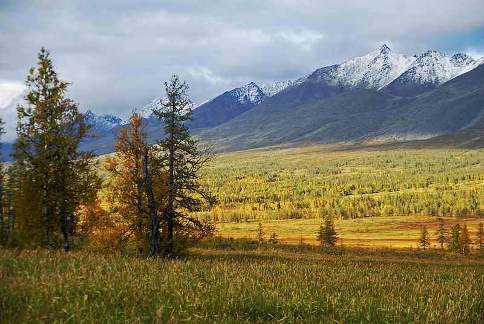

Особо охраняемые территории федерального значения Республики
Коми
Печоро-Илычский заповедник.
Был создан в 1930. Это один из самых известных заповедников РФ, который находится на территории Северного Урала.
Основан он был для сохранения популяции соболя и других видов редких пушных зверей.
Его площадь составляет 721,3 тысяч гектар.

Где находится:
Заповедник находится на западных предгорьях Урала, его границами являются реки Печора и Илыч. Заповедник расположен на границе двух физико-географических стран: Уральской горной страны и Русской равнины.
Климат:
Температура Климат на территории Печоро-Илычского заповедника довольно суров. Так, средняя годовая температура этого района (низменности) составляет всего лишь 0,8°. А средняя температура самого «морозного» месяца, — января, — 17° ниже нуля. Рекорд самой низкой температуры был зафиксирован зимой 1978 г., в декабре и составлял -57,6°. Если же говорить про летние месяцы, то средняя температура самого теплого месяца, июля, 16°, а максимум 35°.
Животные:
Фауна Печоро-Илычского заповедника обусловлена его огромными размерами и ландшафтным разнообразием. Поскольку заказник находится на стыке Европы и Азии, здесь много позвоночных животных. Согласно зарегистрированным данным животный мир представлен 49 видами млекопитающих, среди них такие:
Волк
Северный олень
Росомаха
Лисица
Ондатра
Речная выдра
Соболи
Часто встречаются:
Енотовидная собака
Серая крыса
Косуля
Кабан
А также стало заметно, что американская норка стала доминировать над европейской (европейская норка внесена в Красную книгу РК)
Птицы:
Кроме того, в заповеднике зарегистрировано 242 вида птиц, а также регулярно отмечаются такие залетные виды:
Луговой лунь
Клуша
Белокрылый жаворонок
Как отмечается на официальном сайте заповедной территории, за последние 35 лет их список пополнился 20 новыми видами, среди которых есть:
Большая белая цапля
Белощекая казарка
Малый веретенник
Золотистая щурка
Поручейник
Растительность:
Не менее уникальна и флора заповедника, которая на сегодняшний день насчитывает около 800 видов различных растений. В их число входят:
Редкие лишайники
Венерин башмачок
Минуарция Гельма
Шиверекия подольская
Остролодочник уральский
Родиола розовая
Венерин башмачок крапчатыйГерань белоцветковая
Особый статус:
Такое обширное разнообразие, уникальное расположение и сочетание нескольких природных зон, а также сохранившаяся пятая часть ненарушенных лесов Европы позволили заповедной территории получить статус международного биосферного резервата. Печоро-Илычский заповедник (вместе с нац. Парком «Югыд ва») был включен в природное наследие ЮНЕСКО под названием «Девственные леса Коми»
Дом, в котором живет лось
В 1949 году на территории Печоро-Илычского заповедника была открыта первая в мире опытная лосиная ферма. Ее основной задачей было создание племенных групп домашних лосей трех направлений: мясопродуктивного, молочнопродуктивного и рабочего. Также на ферме успешно вывели несколько видов животных специально для определенных природных зон: для тундры это был северный олень, для высокогорья – як, а для пустыни – верблюд. Благодаря ее деятельности по сей день на территории заповедника в среднем насчитывается до 400 особей крупных парнокопытных.
Сотрудница Печоро-Илычского заповедника подкармливает молодых лосей. 1987 год
Уникальные места
Визитная карточка Печоро-Илычского заповедника – семь каменных столбов, или, как их называют в народе, мансийских болванов, Маньпупунер. Эти останцы высотой от 30 до 42 метров образовались за 200 миллионов лет выветривания гор на вершине одноименного хребта
Еще одним местом, привлекательным для туристов, считается плато Торре-Порре-Из, похожее на древний каменный город. С юга на север все его пространство усыпано скальными останцами причудливой формы и разных размеров. Как отмечают некоторые путешественники, в камнях плато можно разглядеть диковинных животных и птиц
Национальный парк «Югыд ва»
Парк учрежден в 1994 г. для сохранения первозданной природы Приполярного и Северного Урала: уникальных ландшафтов, многочисленных природных достопримечательностей, биологического разнообразия растительного и животного мира.
Где находится:
Национальный парк «Югыд ва» в Республике Коми расположен на западном склоне Северного и Приполярного Урала, в самой высокогорной его части, и тянется с севера на юг вдоль Уральского хребта на 300 км. Только с севера и с юга к парку подходят дороги, поэтому попасть на остальную территорию парка можно только на вертолете или пешком. Его площадь составляет 1,9 млн га.
Климат
На всей площади парка господствует суровый климат, что обеспечивается расположением местности в северной части материка. Характер климата континентальный, но при этом присутствуют и арктические влияния. С северной стороны вдоль хребтов активно дуют холодные ветры. Зимы здесь достаточно суровые, средняя температура составляет -20°C. Летом средняя температура воздуха равна +16°C
Животные
По разнообразию и богатству мира животных национальный парк Югыд Ва находится на первом месте в республике Коми. Местная фауна представлена более 40 видами млекопитающих. В Красную книгу Республики Коми занесены:
Cеверная пищуха
Европейская норка
Соболь
Наиболее типичными видами для парка являются следующие:
Белый песец
Ласка
Лесная куница
Медведь
Росомаха
Выдра
Горностай
Олень северный
Летяга
Заяц-беляк и другие
Птицы
В территориальных рамках парка водится 190 видов птиц, в Красную книгу Коми занесены 19 видов: орлан-белохвост, кречет, беркут, сапсан, скопа, краснозобая казарка. Хищные птицы представлены черным коршуном, большим подорликом, орланом-белохвостом, беркутом. В лесах можно увидеть глухаря, тетерева, рябчика и белую куропатку.
Растительность
Как в степных зонах, так и на равнинных лесах хорошо развиты травяной покров и кустарниковая растительность. Здесь произрастает множество растений Красной книги: можжевельник сибирский, аконит (или борец), аванелла извилистая. Леса и степи этого края удивляют своим разнообразием красивоцветущих трав: герани белоцветковой, горца змеиного и сибирской скерды. Всего здесь произрастает более 600 видов растений.
Уникальные места
Гора Манарага - красивейшая вершина Приполярного Урала, своеобразная визитная карточка национального парка «Югыд ва». Ее название с языка манси переводится как «медвежья лапа. Манарагу называют царицей Урала – за ее причудливый, зубчатый гребень-корону.
Каменная баба. На реке Кожим стоит 30-метровый каменный останец «Каменная баба», напоминающий издали фигуру женщины. В эпоху палеолита каменный идол служил местом жертвоприношения.
Национальный парк «Койгородский»
Третья особо охраняемая природная территория, сохранившая к настоящему времени не тронутый человеком массив девственных южнотаежных лесов Европы.
Парк расположен на юге Республики Коми, на территориях Койгородского и Прилузского административных районов, граничит с Кировским заповедником «Нургуш». Его площадь составляет 56,7 тыс. га.
Животные
Среди представителей животного мира более 20 видов занесены в Красные книги России и Республики Коми. К ним относятся обыкновенный осоед, большой подорлик, дупель, филин, бородатая неясыть, серый сорокопут, обыкновенный подкаменщик, сибирский углозуб и другие.
Растения
Среди сосудистых растений немало редких и исчезающих видов, занесенных в Красные книги России и Республики Коми. Это липа мелколистная, мятлик расставленный, пальчатокоренник балтийский, пальчатокоренник Траунштейнера, цинна широколистная и другие.
Крупные стволы осин являются местообитанием многих видов лишайников, мхов и грибов, охраняемых как на республиканском, так и на федеральном уровнях. Среди них можно встретить клавариадельфус пестиковый, юнгхунию сминающуюся, неккеру перистую, анаптихию реснитчатую, лобарию лёгочную и другие.
Заказник федерального значения «Параськины озера»
В августе 2021 года, после вступления в силу Постановления Правительства РФ, был образован государственный природный заказник «Параськины озера» как филиал Печоро-Илычского государственного природного биосферного заповедника. Его площадь 17 тыс. гектар.
«– Нам важно не просто сохранить эту красоту, но и показывать ее. Чтобы полюбоваться этими местами, не нужно лететь на вертолете или совершать многодневный переход», – подчеркнул на презентации заказника и открытии экотропы глава региона Владимир Уйба.
История создания
Свое название заказник получил в честь Прасковьи Михайловой. Она не сказочный персонаж, а реальная женщина, которая еще до начала ВОВ, во времена насильственной коллективизации поселилась вместе с мужем Федором в глухой тайге. Федор не вернулся с фронта и ей пришлось продолжить семейное дело. В конце 60-х в этих местах стали строить магистральный газопровод «Сияние Севера», газовики помогали Парасковье, а она показывала места, где лучше проложить трассу. Именно строители газопровода составляли карту местности и назвали озера Параськиными
Документы
Приказ министерства природных ресурсов и экологии Российской Федерации от 07.08.2020 №576 «ОБ УТВЕРЖДЕНИИ ПОЛОЖЕНИЯ О НАЦИОНАЛЬНОМ ПАРКЕ "КОЙГОРОДСКИЙ"»